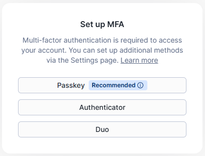
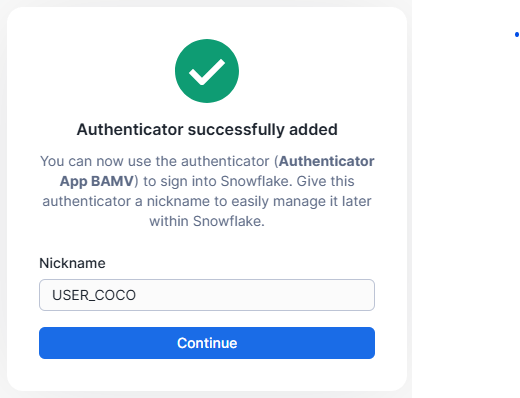

Lab Environment Setup
Build a governed, cost-capped AI lab environment in Snowflake
Where you are
This is where the hands-on work begins. Modules 01 and 02 gave you the vocabulary and the function catalog; this module turns those concepts into a real Snowflake account with a dedicated role, a right-sized warehouse, a credit quota, and sample data. Everything from here on is hands-on, so run each statement as you read it rather than saving the work for later.
Learning Objectives
- Sign up for Snowflake CoCo and create your training user
- Create the role, database, schema, and warehouse the labs depend on
- Grant the exact Cortex privileges the AI functions require, and no more
- Cap warehouse compute with a Resource Monitor and know what it does not cap
- Load the sample tables used by Modules 05 through 09, then verify the whole environment
Key Principle - Two Cost Layers
Resource Monitors cap warehouse compute credits. Cortex AI functions consume AI Credits, which are metered and billed separately. You need a control for each layer: the Resource Monitor you build in Section F covers compute, while AI spend is measured in Module 06: Usage Tracking & AI Telemetry and governed with Budgets in Module 08: Budgets & Spend Controls.
Sign Up for Snowflake CoCo
Complete Before the Session
Account activation can take a few minutes. If you haven't done this yet, complete it now before proceeding to the hands-on modules.
Create Your Snowflake CoCo Account
Visit the CoCo signup page to create your account:
https://signup.snowflake.com/cortex-code
Trial accounts include credits to explore CoCo capabilities.
Credit Card Required
CoCo signup requires a credit card on file. No charges are applied during the trial period, but the card must be present to complete setup.
Existing Snowflake Account
If you already have a Snowflake account, you can use CoCo with your existing credentials. The CLI will connect to your account using either:
- Browser-based SSO - Interactive use on a machine with a web browser
- Programmatic Access Token (PAT) - Headless environments or automation
You only need the account here. Installing the CLI and choosing an authenticator happens in Module 04: CoCo CLI Setup.
Create Role, User, and Database
Create Training Role and User
Why: Dedicated role and user for training participants with only the permissions needed. Run the following as ACCOUNTADMIN:
USE ROLE ACCOUNTADMIN; -- Create dedicated training role CREATE ROLE cortex_analyst; -- Create training user CREATE USER USER_COCO PASSWORD = '********'; -- Create training database and schema CREATE DATABASE cortex_lab; CREATE SCHEMA cortex_lab.ai_workshop;
Grant Ownership and Permissions
Why: The training role needs full ownership of the lab objects and access to Cortex AI capabilities.
-- Grant ownership on training objects GRANT OWNERSHIP ON DATABASE cortex_lab TO ROLE cortex_analyst; GRANT OWNERSHIP ON SCHEMA cortex_lab.ai_workshop TO ROLE cortex_analyst; -- Assign role to user GRANT ROLE cortex_analyst TO USER USER_COCO;
Create Warehouse with FinOps Settings
Provision Warehouse
Why: 300-second (5 min) auto-suspend balances cost and resume latency. SMALL size is sufficient for training workloads. MAX_CLUSTER_COUNT = 1 prevents multi-cluster scaling.
CREATE WAREHOUSE cortex_wh
WAREHOUSE_SIZE = 'SMALL'
AUTO_SUSPEND = 300
AUTO_RESUME = TRUE
MAX_CLUSTER_COUNT = 1;
-- Grant ownership to training role
GRANT OWNERSHIP ON WAREHOUSE cortex_wh TO ROLE cortex_analyst;
Grant Cortex AI Access
Enable Cortex Capabilities
Why: Callers need the account privilege USE AI FUNCTIONS (granted to PUBLIC by default) plus a database role: SNOWFLAKE.CORTEX_USER or SNOWFLAKE.AI_FUNCTIONS_USER. Copilot uses COPILOT_USER. Imported privileges on the SNOWFLAKE database enable ACCOUNT_USAGE views for cost tracking.
-- Account privilege (usually already on PUBLIC; grant explicitly for clarity) GRANT USE AI FUNCTIONS ON ACCOUNT TO ROLE cortex_analyst; -- Database roles for AI functions / Copilot GRANT DATABASE ROLE SNOWFLAKE.COPILOT_USER TO ROLE cortex_analyst; GRANT DATABASE ROLE SNOWFLAKE.CORTEX_USER TO ROLE cortex_analyst; -- Alternative for AISQL-only access without full CORTEX_USER: -- GRANT DATABASE ROLE SNOWFLAKE.AI_FUNCTIONS_USER TO ROLE cortex_analyst; -- Grant access to account usage views (for cost tracking) GRANT IMPORTED PRIVILEGES ON DATABASE SNOWFLAKE TO ROLE cortex_analyst;
Permission Note
USE AI FUNCTIONS plus CORTEX_USER (or AI_FUNCTIONS_USER) is the current access model. Granting them explicitly rather than relying on the PUBLIC default makes the entitlement visible to anyone auditing the account. The IMPORTED PRIVILEGES grant is what makes the telemetry views readable later; the queries that use them live in Module 06: Usage Tracking & AI Telemetry.
MFA Setup
Configure Multi-Factor Authentication
Why: MFA is required for Snowflake CoCo CLI authentication. After first login, Snowflake will prompt you to set up MFA.
Step 1: Choose your MFA method. Snowflake supports Passkey, Authenticator app, or Duo:

Step 2: After adding your authenticator, give it a nickname for easy identification (e.g., USER_COCO):

Recommended: Authenticator App
We recommend using an authenticator app (Google Authenticator, Microsoft Authenticator, or similar) for the most reliable experience with Snowflake CoCo CLI. The nickname helps identify this MFA method in your Snowflake settings.
Resource Monitor (Warehouse Compute Guard)
A Resource Monitor Caps Compute Only
A Resource Monitor watches the credits a warehouse burns while it is running, and it can suspend that warehouse when the quota is reached. It has no visibility into AI Credits, so a Cortex query can keep spending on tokens even after the monitor fires. Nothing in this module caps AI spend. The AI feature budget DDL lives in Module 08: Budgets & Spend Controls, and you will not need it until then.
Create Resource Monitor
Why: A 50-credit quota is well above what this workshop consumes, so the monitor should never fire during normal use. It exists to catch the accident: a warehouse left running overnight, or a query fanned out across the full TPCH tables.
CREATE RESOURCE MONITOR IF NOT EXISTS cortex_lab_monitor
WITH CREDIT_QUOTA = 50
TRIGGERS
ON 50 PERCENT DO NOTIFY
ON 75 PERCENT DO NOTIFY
ON 90 PERCENT DO SUSPEND_IMMEDIATE;
ALTER WAREHOUSE cortex_wh
SET RESOURCE_MONITOR = cortex_lab_monitor;
Why SUSPEND_IMMEDIATE at 90%?
The two notify triggers give you warning at 50 and 75 percent so you can investigate while the lab is still usable. SUSPEND_IMMEDIATE at 90 percent kills running statements instead of letting them finish, which is the right trade in a training account where an unattended query is far more likely than urgent work. In production you would usually pair SUSPEND at 90 percent with SUSPEND_IMMEDIATE at 100 percent.
Load Sample Data
Login as USER_COCO
Sections A through F run as ACCOUNTADMIN. From this point onward, log in as USER_COCO (the training user you created in Section B) so that the sample tables are owned by cortex_analyst. If you load the data as ACCOUNTADMIN, the later labs will fail on privilege errors rather than on anything you did wrong.
Create Customer Feedback Table
Why: Customer feedback data for sentiment analysis and classification exercises. Uses SNOWFLAKE_SAMPLE_DATA available in all accounts.
USE ROLE cortex_analyst;
USE SCHEMA cortex_lab.ai_workshop;
USE WAREHOUSE cortex_wh;
CREATE OR REPLACE TABLE cortex_lab.ai_workshop.customer_feedback AS
SELECT
c.c_custkey AS customer_id,
c.c_name AS customer_name,
c.c_comment AS feedback_text,
c.c_mktsegment AS market_segment,
c.c_acctbal AS account_balance,
n.n_name AS country,
CURRENT_TIMESTAMP() AS loaded_at
FROM snowflake_sample_data.tpch_sf1.customer c
JOIN snowflake_sample_data.tpch_sf1.nation n
ON c.c_nationkey = n.n_nationkey
LIMIT 500;
Create ORDERS, CUSTOMER, and SUPPLIER Tables
Why: The AISQL labs in Module 05 need a table large enough that row count visibly drives token cost. These come from TPCH_SF10, so the copy takes a few minutes of warehouse time and is the largest compute cost in the entire workshop. Run it once, and let the warehouse auto-suspend when it finishes.
-- ORDERS
CREATE TABLE cortex_lab.ai_workshop.ORDERS (
O_ORDERKEY NUMBER(38,0) NOT NULL,
O_CUSTKEY NUMBER(38,0) NOT NULL,
O_ORDERSTATUS VARCHAR(1) NOT NULL,
O_TOTALPRICE NUMBER(12,2) NOT NULL,
O_ORDERDATE DATE NOT NULL,
O_ORDERPRIORITY VARCHAR(15) NOT NULL,
O_CLERK VARCHAR(15) NOT NULL,
O_SHIPPRIORITY NUMBER(38,0) NOT NULL,
O_COMMENT VARCHAR(79) NOT NULL
);
INSERT INTO cortex_lab.ai_workshop.ORDERS
SELECT * FROM SNOWFLAKE_SAMPLE_DATA.TPCH_SF10.ORDERS;
-- CUSTOMER
CREATE TABLE cortex_lab.ai_workshop.CUSTOMER (
C_CUSTKEY NUMBER(38,0) NOT NULL,
C_NAME VARCHAR(25) NOT NULL,
C_ADDRESS VARCHAR(40) NOT NULL,
C_NATIONKEY NUMBER(38,0) NOT NULL,
C_PHONE VARCHAR(15) NOT NULL,
C_ACCTBAL NUMBER(12,2) NOT NULL,
C_MKTSEGMENT VARCHAR(10),
C_COMMENT VARCHAR(117)
);
INSERT INTO cortex_lab.ai_workshop.CUSTOMER
SELECT * FROM SNOWFLAKE_SAMPLE_DATA.TPCH_SF10.CUSTOMER;
-- SUPPLIER
CREATE TABLE cortex_lab.ai_workshop.SUPPLIER (
S_SUPPKEY NUMBER(38,0) NOT NULL,
S_NAME VARCHAR(25) NOT NULL,
S_ADDRESS VARCHAR(40) NOT NULL,
S_NATIONKEY NUMBER(38,0) NOT NULL,
S_PHONE VARCHAR(15) NOT NULL,
S_ACCTBAL NUMBER(12,2) NOT NULL,
S_COMMENT VARCHAR(101)
);
INSERT INTO cortex_lab.ai_workshop.SUPPLIER
SELECT * FROM SNOWFLAKE_SAMPLE_DATA.TPCH_SF10.SUPPLIER;
Verify Setup
Confirm All Objects
Why: Confirm all objects are created correctly before proceeding to the hands-on exercises.
-- Check Resource Monitor
SHOW RESOURCE MONITORS LIKE 'CORTEX_LAB_MONITOR';
-- Check Warehouse
SHOW WAREHOUSES LIKE 'CORTEX_WH';
-- Check sample data loaded
SELECT COUNT(*) AS row_count
FROM cortex_lab.ai_workshop.customer_feedback;
-- Preview sample data
SELECT
customer_id,
customer_name,
LEFT(feedback_text, 80) AS feedback_preview,
market_segment,
country
FROM cortex_lab.ai_workshop.customer_feedback
LIMIT 5;
Knowledge Check
Q1: Your cortex_lab_monitor suspends cortex_wh at 90 percent of its quota. Does that stop a runaway AI_COMPLETE() bill?
Q2: Why does cortex_analyst need IMPORTED PRIVILEGES ON DATABASE SNOWFLAKE when none of the setup statements read from that database?
ACCOUNT_USAGE queries in Module 06 return an object-does-not-exist error rather than a permission error, which makes the cause hard to spot. Granting it during setup avoids that detour.
Q3: Why is AUTO_SUSPEND = 300 with MAX_CLUSTER_COUNT = 1 the right shape for a lab warehouse?
Setup Complete - Expected Results
- ✓ User:
USER_COCO - ✓ Role:
cortex_analystwith Cortex access - ✓ Database:
cortex_lab - ✓ Schema:
cortex_lab.ai_workshop - ✓ Warehouse:
cortex_wh(SMALL, 5 min auto-suspend) - ✓ Resource Monitor:
cortex_lab_monitor(50 credit quota) - ✓ Table:
customer_feedback(500 rows) - ✓ MFA: Configured for
USER_COCO